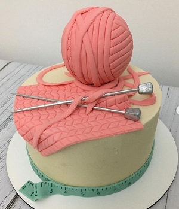

Nosotros
Todo Lindo empezó como un hobby, desde muy chiquita me gustaba la decoración de tortas, y mi mamá me contaba que en vez de mirar dibujitos miraba a Marta Ballina (Buenos Aires, Argentina, 25 de noviembre de 1949 - 24 de junio de 1997) fue una reconocida cocinera, editora y conductora argentina de televisión de cable. Se destacó en el programa Utilísima. Empecé a hacerle las tortas a mis familiares para cada cumpleaños, hasta que un día decidí ir innovando lo que sabía quería probar otros materiales como, por ejemplo, la pasta americana y algunas técnicas que usaba Marta en un libro que me había prestado una vecina. Mi familia y amigos me decían que tenía que dedicarme a esto y comercializar las tortas, pero yo lo veía muy lejano, hasta que un día hice mi primera entrega a modo comercial. De ahí en más cree una pàgina en facebook y se empezó a correr la voz de que hacía tortas decoradas, fueron saliendo los primeros encargos, luego de mucho trabajo y gracias a la confianza de mis clientes hoy Todo Lindo es un emprendimiento en el cual pude crecer y comprarme muchos insumos, máquinas, etc. para poder trabajar y que la producción sea mucho más grande. En la cuarentena mi fuerte fueron los desayunos y gracias a eso pude comprar mi primer horno convector, con el cual soñaba desde hace años gracias a mucho esfuerzo y noches sin dormir. Estoy muy orgullosa de este emprendimiento ya que además de ser un trabajo es mi cable a tierra y cada pieza que elaboro esta hecha con mucho amor. Y así se fué tejiendo esta historia de crecimiento personal, con mucho sacrificio, con el acompañamiento de mi familia y con el linaje de mi abuela Teresa de quien heredé este amor profundo por la cocina.
